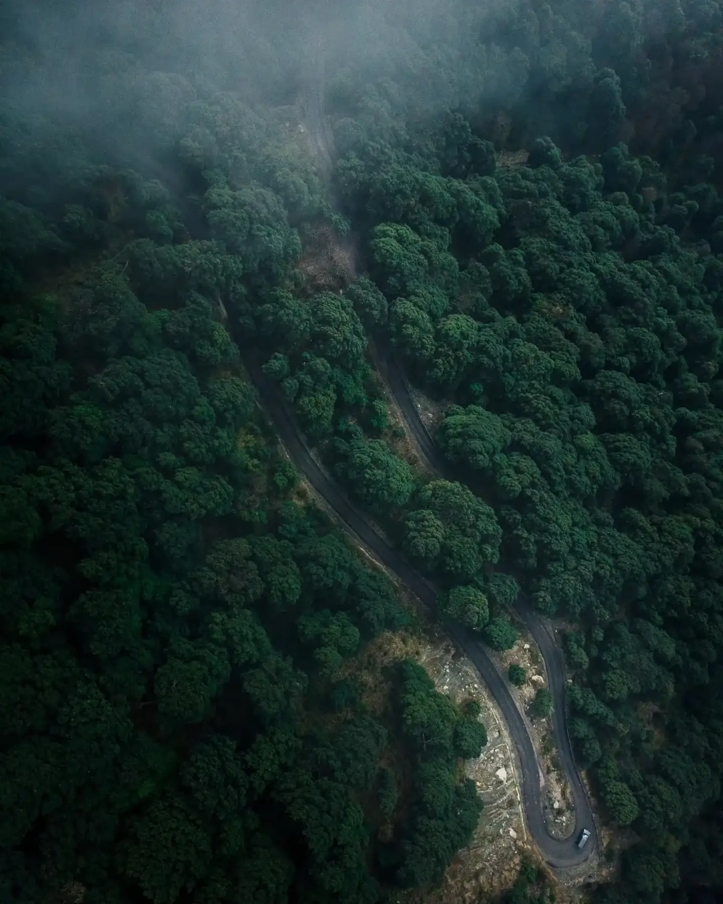

Our story
Founded in 2021, LO-CARB is a sustainability consultancy that sees sustainability as the heart of business, not a trend or CSR. We combine science, technology and business to help Thai organizations cut emissions, meet global standards and grow.
Our point of view
We don’t see sustainability as a trend or CSR. We see it as the next growth core of business.
- 01Sustainability
- 02Business strategy
- 03Technology
- 04Creative thinking
Mission
We put the world on a carbon diet.
We map a clear path to lower emissions while driving business performance, for organizations from the public to the private sector, large and small.
- 01A clear path to lower emissions
- 02Driving business strategy alongside
- 03For public and private organizations
How we got here
- 2021
LO-CARB founded
- 2023
Launched CarbonCal and Carbon Camp
- 2025
Recognized as an ISSB training partner
- 2026
Became Thailand’s first IFRS Sustainability Alliance member
We believe
Sustainability is the new growth core.
We don’t see it as a trend or CSR, but as the heart of the business: it drives performance, reduces risk, meets customer demand and opens local and global opportunities.
Three things that make LO-CARB
- 01Sustainability-rooted We understand each sector’s challenges and find the smoothest path to transformation.
- 02Technology-driven We use technology to solve problems more efficiently than traditional methods.
- 03Creative thinkers We make sustainability simple, relevant and practical.
Our impact
Impact you can measure
- 40+clients across 5 sectors
- 25+organizations using CarbonCal
- 120,000tCO₂e measured
- 1,500+people trained through Carbon Camp
- 5years in sustainability consulting
Leadership
Meet the board
Leadership profiles will appear here once they are approved for publication.
Name Surname
Position
Name Surname
Position
Name Surname
Position
Name Surname
Position
Learn more or contact our team
Explore our perspectives on IFRS and carbon management, or contact us to discuss your organization’s needs.
เรื่องราวของเรา
โล-คาร์บก่อตั้งในปี 2564 เป็นบริษัทที่ปรึกษาด้านความยั่งยืนที่มองความยั่งยืนเป็นหัวใจของธุรกิจ ไม่ใช่แค่กระแสหรือ CSR เราผสานวิทยาศาสตร์ เทคโนโลยี และธุรกิจ เพื่อช่วยองค์กรไทยลดการปล่อยก๊าซเรือนกระจก ก้าวสู่มาตรฐานสากล และเติบโตไปพร้อมกัน
มุมมองของเรา
เราไม่ได้มองความยั่งยืนเป็นเพียง CSR หรือกระแส แต่คือแกนหลักใหม่ของการเติบโตทางธุรกิจ
- 01ความยั่งยืน
- 02กลยุทธ์ธุรกิจ
- 03เทคโนโลยี
- 04ความคิดสร้างสรรค์
พันธกิจ
เราจะพาโลกไปสู่ สังคมคาร์บอนต่ำ
ด้วยการวางเส้นทางลดการปล่อยก๊าซเรือนกระจกที่ชัดเจน ควบคู่กับการขับเคลื่อนเชิงกลยุทธ์ธุรกิจ ให้กับองค์กรทั้งภาครัฐและเอกชน
- 01เส้นทางลดการปล่อยก๊าซเรือนกระจกที่ชัดเจน
- 02ควบคู่กับการขับเคลื่อนกลยุทธ์ธุรกิจ
- 03สำหรับองค์กรทั้งภาครัฐและเอกชน
เส้นทางของเรา
- 2564
ก่อตั้ง LO-CARB
- 2566
เปิดตัว CarbonCal และ Carbon Camp
- 2568
ได้รับการรับรองเป็นพาร์ทเนอร์ด้านการอบรม ISSB
- 2569
เป็นสมาชิก IFRS Sustainability Alliance รายแรกของประเทศไทย
สิ่งที่เราเชื่อ
ความยั่งยืนคือแกนหลักใหม่ ของการเติบโตทางธุรกิจ
โล-คาร์บไม่ได้มอง “Sustainability” เป็นเพียงกระแสหรือ CSR แต่เป็นหัวใจของธุรกิจ ที่ช่วยเพิ่มผลประกอบการ ลดความเสี่ยง ตอบโจทย์ลูกค้า และเปิดโอกาสทุนใหม่ๆทั้งในประเทศและต่างประเทศ
3 สิ่งที่เป็นตัวตนของ LO-CARB
- 01Sustainability-rooted เข้าใจความท้าทายที่แตกต่างของแต่ละอุตสาหกรรม เพื่อวางเส้นทางสู่ความยั่งยืนที่ราบรื่นที่สุด
- 02Technology-driven ใช้เทคโนโลยีแก้ปัญหาให้มีประสิทธิภาพกว่าวิธีเดิม
- 03Creative thinkers ทำให้เรื่องความยั่งยืนเข้าใจง่าย ใกล้ตัว และนำไปใช้ได้จริง
ผลงานของเรา
ผลลัพธ์ที่วัดผลได้
- 40+ราย ลูกค้าใน 5 กลุ่มอุตสาหกรรม
- 25+แห่ง องค์กรที่ใช้ CarbonCal
- 120,000tCO₂e ปริมาณคาร์บอนที่วัดแล้ว
- 1,500+คน ผู้ผ่านการอบรม Carbon Camp
- 5ปี ประสบการณ์ด้านที่ปรึกษาความยั่งยืน
ผู้บริหาร
รู้จักคณะกรรมการ
ข้อมูลผู้บริหารจะแสดงที่นี่เมื่อได้รับการอนุมัติให้เผยแพร่
- 01พื้นที่รูปภาพ ชื่อ นามสกุล ตำแหน่ง
- 02พื้นที่รูปภาพ ชื่อ นามสกุล ตำแหน่ง
- 03พื้นที่รูปภาพ ชื่อ นามสกุล ตำแหน่ง
- 04พื้นที่รูปภาพ ชื่อ นามสกุล ตำแหน่ง
ศึกษาข้อมูลเพิ่มเติม หรือ ติดต่อทีมงานของเรา
ศึกษามุมมองของเราด้านมาตรฐาน IFRS และการบริหารจัดการคาร์บอน หรือติดต่อเราเพื่อหารือความต้องการขององค์กรท่าน